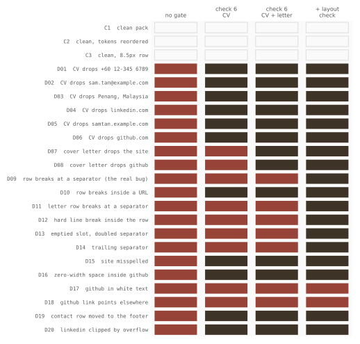

Scripts I wrote check every CV and cover letter before it goes out. I proved each check the usual way: break something on purpose, watch the check fail, then trust it. In four days in September, three broken documents got past, two of them through a check I had already proved. This is what each one missed, and an experiment that puts a number on it.
The incidents are real and reported as counts only: no application, company or real CV appears. The experiment uses a made-up CV and cover letter (fake name, example.com contacts) printed to PDF by headless Chrome, and the gates copied line for line from the pipeline.
The defect was always the same small thing: the row of contact details under my name. It has six items, the links a recruiter clicks, and an application pack is a CV and a cover letter that both carry it.
| Gate | What it read | What got past it |
|---|---|---|
| None | nothing | A CV forked from an older pack inherited that pack's header and went out 3 times without the portfolio link. |
| Check 6 | CV text, first 10 lines | The cover letter in the same pack carried the same missing link. The check never opened it. |
| Check 6, CV + letter | Both files, lines rejoined | All 18 packs of one batch wrapped the row onto two lines and stranded a separator. Every item was present, so every pack passed. |
| + Layout check | The email's own line, breaks kept | Nothing in the real history yet. Fails at the old 9.6px row, passes at 9.0px. |
The third miss taught the most. The presence check reads the first lines of
pdftotext -raw and joins them into one string on purpose, so a row the extractor splits
still counts as one. That same choice makes it blind to layout. A row that fits and a row that wraps produce the
same joined text. The fix was not a better presence check but a second check that reads a
different extraction, the one that keeps the page's line breaks.
Check 6 found real damage on its first run. Of one batch of quality-engineering packs, 7 carried the portfolio link but no GitHub, and 3 carried GitHub but no portfolio. Nobody had diffed a header against the master, so nobody had seen it.
• A lint gate that could neither pass nor fail. The prose linter writes its report to
stderr. The gate read stdout, found no count, and returned −1 for every file. It never passed a
clean document and never failed a dirty one for the right reason.
• A page-size gate that failed a correct PDF. It matched the string "594" to spot A4. Chrome
writes A4 as 594.96 points wide on one version and 595.92 on another, so a real A4 page failed and
sent me rebuilding a document that was already right. It now measures against 595.28 ± 2.
One made-up pack, then 20 copies of it, each with one designed defect: six single items dropped from the CV, two dropped from the letter only, four ways for the row to wrap, two broken separators, a misspelling, an invisible character inside a URL, a link in white text, a link pointing somewhere else, the row moved to the footer, and one item clipped off the edge. Three clean packs (the original, the items reordered, a smaller font) measure false alarms. Every pack runs through four gate versions: none, check 6, check 6 on both files, and both plus the layout check.
pdftotext -bbox),
an extraction no gate reads. The first version of that probe matched known words, and so could not
see a break inside a URL. A calibration assert caught it before any number was reported.The clean packs pass every version, and the script refuses to report if they don't.

| Gate version | Escaped | Escape rate | 95% CI (Wilson) | False alarms |
|---|---|---|---|---|
| None | 20 / 20 | 100% | 84–100% | 0 / 3 |
| Check 6, CV | 9 / 20 | 45% | 26–66% | 0 / 3 |
| Check 6, CV + letter | 7 / 20 | 35% | 18–57% | 0 / 3 |
| + Layout check | 2 / 20 | 10% | 3–30% | 0 / 3 |
These rates are over a library I designed, not a sample of real mistakes. They rank the gate versions against each other. They do not predict how often a real defect gets through, and the wide intervals on twenty cases say so.
Two of the wrap cases are the same defect, a row too wide for the page, at two font sizes. At 10.5px Chrome breaks the row at a separator. Every item stays whole, the presence check passes, and the row wraps: the shape of the real bug. At 9.6px it breaks inside the GitHub URL, at its hyphen. The URL is now two words, the presence check no longer finds it, and it fails. The same overflow is caught or missed depending on how long the items happen to be. A gate whose verdict hangs on that is not measuring the defect.
Both survivors live outside the text layer. White text is in the text, just unreadable on the page, so catching it takes a look at pixels or at the source's colours. A wrong URL behind the right label lives in the PDF's link annotations, which no text extraction returns. Each one needs its own reading of the file, the same lesson the layout check taught.
• Give each gate a library, not one bad file. Twenty cases and 46 PDF renders take a few
minutes and found both blind spots the single-file test could not.
• One check per reading of the file. Presence on joined text, layout on line-preserving
text, links on annotations, visibility on pixels. A check that serves two readings is blind in one
of them.
• Report escapes by kind. "2 of 20" hides that both have the same cause.
• Keep the clean controls. A gate that fails everything also has a 0% escape rate.
pdftotext)
· Results:
data/gates_results.json